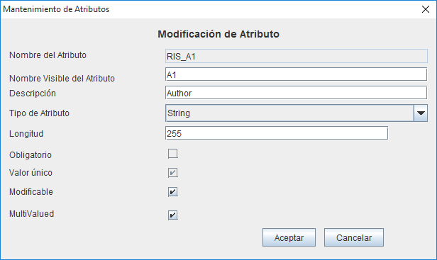
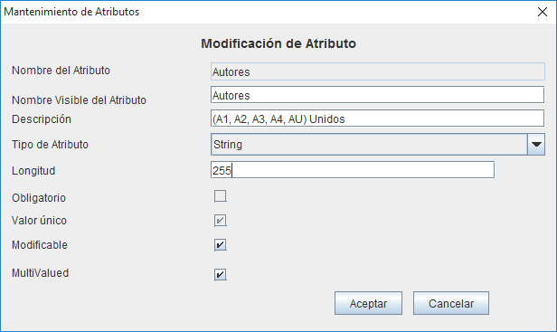
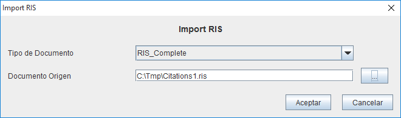

The standard format RIS for interchange of bibliographic references is used by reference managers as Zotero or Mendeley. It's ppossible to find the reference at: “RIS” Format Documentation, although differences are observed occasionally in the use or interpretation of RIS from various sources.
Although OpenProdoc now supports references in previous versions, in version 1.2 support for RIS is added, so references can be imported and exported in a standardized way. To use RIS to OpenProdoc should be defined ( definitions objects) the type or types of documents in which you want to store the imported references. By default a RIS_Completo document type that includes all possible metadata of RIS is defined. Besides the already provided, new document types can be created , for which we must ensure that in addition to the definition, the container is created.
The ability to define various types of documents to import RIS allows specialized types to use for the kind of material to use, eliminating unnecessary metadata and using the advantages to handle document types to filter, search and define tasks. For using a document type as RIS import destination it should be defined according to the following criteria:


En cualquier caso, las longitudes de los metadatos definidos en OpenProdoc deben ser los adecuados para poder almacenar los datos del registro RIS. Igualmente el tipo de dato (cadena, fecha, número) debe corresponder al de RIS. Por seguridad, y dado que elementos como fecha no siempre se introducen completos, puede ser preferible definir todos como cadena, evitando errores al importar.
La importación se realiza desde el menú Documentos->Import RIS. Se presentará el formulario de importación de archivos RIS. Este formulario permite elegir el tipo documental de tipo RIS al que se desea importar y el archivo RIS que se importará, el cual puede tener una sola entrada o múltiples registros. Los documents se crearán en la carpeta actual y con el tipo documental elegido, presentando un mensaje si se hubiera producido cualquier error de importación (por ejemplo por errores de sintaxis en el archivo a importar).

La exportación se realiza por medio de los Informes de OpenProdoc. Puede exportarse a un formato RIS de nuevo, para lo que con OpenProdoc se suministra un ejemplo de informe, o podría exportarse a un formato de texto de referencia bibliográfica o con cualquier otro informe. a exportación de nuevo a RIS requiere el haber utilizado el tipo documental RIS_Completo o uno similar, con todos los metadatos desagregados, pues en caso de unificar metadatos ya no es posible separarlos luego.